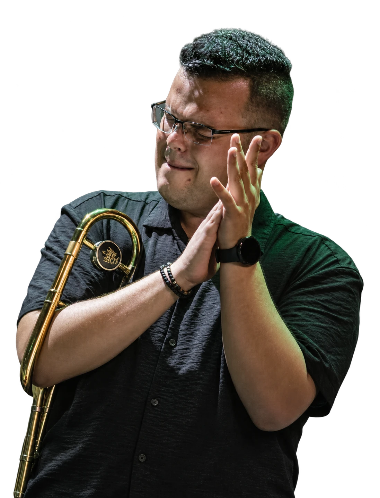

2005 CUÉLLAR
Todo empieza por escuchar. Álvaro comienza en la escuela de música de Cuéllar: las primeras notas, los primeros ensayos y un instrumento que se queda para siempre.


MÚSICA EN PRIMERA PERSONA.UN RECORRIDO QUE EMPIEZA POR ESCUCHAR.
Todo empieza por escuchar. Álvaro comienza en la escuela de música de Cuéllar: las primeras notas, los primeros ensayos y un instrumento que se queda para siempre.
La música se convierte en el camino. Comienza su formación en Musikene, una nueva etapa para profundizar en el instrumento y seguir creciendo entre músicos.

Un máster en Holanda abre nuevas perspectivas. Otro lugar, nuevas experiencias y la misma vocación. Ese año comienza también su etapa con C. Tangana.

Con C. Tangana, el escenario se convierte en un encuentro. La fuerza de una banda, la raíz y la emoción de hacer música juntos.


En 2022 comienza su etapa con David Bisbal. Una nueva voz, nuevos escenarios y la misma pasión por la música en directo.


En 2021 comienza su etapa con C. Tangana. Una mesa, una banda y una forma distinta de vivir el escenario: la música como un encuentro.

2022 / CAMBIA EL ESCENARIO. SIGUE LA MÚSICA.
OTRA VOZ.
LA MISMA PASIÓN.
La fuerza de una voz. El pulso de una banda. El trombón como parte de algo más grande: la emoción de la música en vivo.
EXPLORAR EL DIRECTO04 / ESTO NO SE QUEDA EN UNA FOTO

EL SONIDO.
EN PRIMERA PERSONA.
Momentos reales. Música en primera persona.
Una pequeña ventana a lo que ocurre sobre el escenario.
Los vídeos se abren aquí con el reproductor de Instagram. Las fotografías son una selección editorial del archivo.